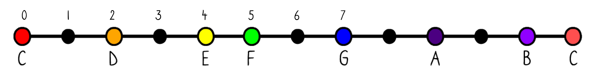
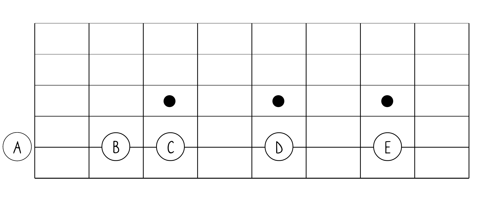

Chapter 13
Music Theory: The Perfect Intervals
Each interval has 2 attributes:
- Quantity. This is the number of note names the interval spans. This is what we covered in detail in Chapter 11, “Intro To Intervals.”
- Quality. Quality describes the number of half steps traversed from the lower note to the higher note in the interval. The term that represents this number will come before the interval name. For example, “Perfect 4th”. “Perfect” represents the quality of the 4th interval. There are five different interval qualities—Major, Minor, Augmented, Diminished, and Perfect. In this book, we are only focusing on the perfect interval quality because it will help us understand Power Chords (chapter 15).
There are 4 intervals in the “Perfect” family: Unisons, 4ths, 5ths, and 8ths (also called the octave).
The Perfect Unison Interval
In theory, the Unison interval might be a little more complicated than it is in the real world. This interval is the same note. For example, when you and a friend both play the E string, you are playing “in unison”. The distance from E to E is 0 (no half steps traversed) and only 1 note name is counted (just E). Therefore the interval is a called a Perfect Unison. The shorthand for this interval is P1.
The Perfect 4th Interval
A 4th interval is perfect if you traverse 5 half steps. For example, the interval from G to C is a 4th because it spans 4 note names. G (1), A (2), B (3), and C (4). Its quality is Perfect because you traverse 5 half steps. Therefore G–C is a Perfect 4th. The shorthand for this interval is P4.

The Perfect 5th Interval
A 5th interval is perfect if you traverse 7 half steps. For example, C to G is a Perfect 5th. The shorthand for this interval is P5.

The Perfect 8th Interval
And finally an octave interval (an 8th) is perfect if you traverse 12 half steps. For example, from the low C to the high C is an octave (or Perfect 8th). The shorthand for this interval is P8. As you know, this interval is also called the octave.
Interval Practice Worksheet
With this practice worksheet, you’ll work on counting intervals with the aid of the fretboard. There are two ways to count intervals because there are two attributes for an interval—quantity and quality. When counting half-steps traversed (an interval’s quality), pretend you are playing a board game and start counting when you start moving. In other words, don’t count the “space” you’re on. If you do include the space, you need to remember to start counting from 0. When counting notes spanned (an interval’s quantity), just count the notes. In other words, start counting from 1.
Questions 1 and 4 are done for you.

For the above fretboard, answer the following questions:
- Count the half-steps (frets) traversed from E to B. _____7__________
- Count the half-steps (frets) traversed from E to A. ________________
- Count the note names spanned in the interval E–B. _______
- Count the note names spanned in the interval E–A. ___4___

For the above fretboard, answer the following questions:
5. Count the half-steps traversed from A to E. ________________
6. Count the half-steps traversed from A to D. ________________
7. Count the note names spanned in the interval A–E. _______
8. Count the note names spanned in the interval A–D. _______

For the above fretboard, answer the following questions:
9. Count the half-steps traversed from D to A. ________________
10. Count the half-steps traversed from D to G. ________________
11. Count the note names spanned in the interval D–A. _______
12. Count the note names spanned in the interval D–G. _______